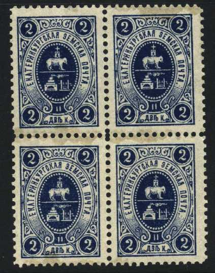
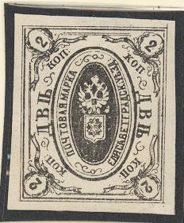
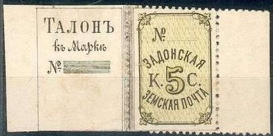
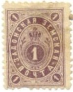

Return To Catalogue - Go to Zemstvos overview - Russia
Note: on my website many of the
pictures can not be seen! They are of course present in the
catalogue;
contact me if you want to purchase it.

2 k blue 5 k brown
(Sorry, no images available yet)
2 k blue 5 k red
3 k green

3 k blue
5 k violet (on white, yellow or grey paper) 5 k black
Forgeries exist, see http://ufdc.ufl.edu/UF00020235/00035/22j; There should be a dot behind the 'T' (4th letter) and not behind the 'Y' (third letter). The genuine stamps have shading on the body of the animal. The forgery does not have any shading. It might be based on an illustration in the Moens catalogue: "Les Timbres de Russie' by J.B.Moens, 1893.

3 k lilac 5 k blue 5 k black 5 k violet

(Reduced size)
5 k red 5 k lilac 5 k blue 5 k brown

2 k black on yellow 2 k black (1876) 5 k red on lilac 5 k green (1872) 10 k red on red (1872) 10 k red (1872) 10 k brown (1876) 20 k blue (1872)


(Reduced size)
2 k black 5 k brown 10 k brown 20 k violet
2 k brown (2 types, exists perforated) 5 k green 10 k red 20 k lilac

2 k black 2 k brown 2 k green 2 k red 2 k lilac 5 k green 5 k yellow 5 k red 5 k blue 10 k red 10 k blue 10 k green 20 k black
Envelope?


5 k black and green (3 types)

1888 arms, 1891 value, 1893 value and 1888 arms again

1 k red 1 k green (1889) 3 k green 3 k orange (1889) 5 k blue 5 k blue and red (1890)


1 k blue and yellow 1 k red (1897) 3 k green and blue 5 k blue and red 5 k orange (1894)

1 k lilac 5 k brown and blue



1 k green 1 k lilac 2 k brown 3 k red 3 k orange 3 k red and blue 5 k red 5 k orange

1 k red 1 k olive (1904) 1 k orange (1908) 1 k violet (1911) 5 k lilac 5 k green (exists imperforated) 5 k violet (1904) 5 k lilac (1908) 5 k yellow (1911) 5 k red (1913)
1 k brown 5 k red and blue
1 k orange 1 k red (1904) 5 k blue 5 k green (1904)
5 k green